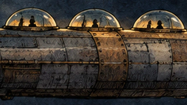
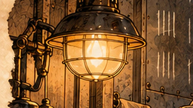
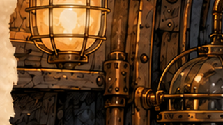
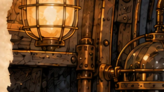
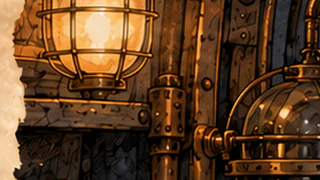
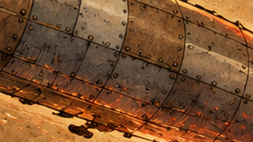
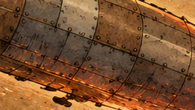

Bytes de los .ctex reales (lo que entra al .pck y a la APK), las 7 láminas juntas. Los recortes son la zona de 320 × 180 donde WebP q95 se aparta más del original, sin ampliar (el navegador los muestra a tamaño real).
| Variante | Total MiB | % del actual | PSNR medio (dB) |
|---|---|---|---|
| actual | 24.46 | 100 % | idéntico (sin pérdida) |
| sin_pérdida_sin_mipmaps | 17.88 | 73 % | idéntico (sin pérdida) |
| webp_q95 | 5.56 | 23 % | 40.2 |
| webp_q90 | 4.00 | 16 % | 38.5 |
| webp_q85 | 3.04 | 12 % | 36.9 |
Recurso importado: actual 2.77 MiB; WebP q95 0.48 MiB; q85 0.19 MiB.

Recurso importado: actual 3.70 MiB; WebP q95 0.89 MiB; q85 0.51 MiB.
Recurso importado: actual 3.57 MiB; WebP q95 0.81 MiB; q85 0.45 MiB.

Recurso importado: actual 3.46 MiB; WebP q95 0.76 MiB; q85 0.43 MiB.



Recurso importado: actual 3.23 MiB; WebP q95 0.77 MiB; q85 0.34 MiB.


Recurso importado: actual 3.83 MiB; WebP q95 0.89 MiB; q85 0.55 MiB.
Recurso importado: actual 3.89 MiB; WebP q95 0.96 MiB; q85 0.57 MiB.